10. Весь мир - пейзаж. Прогулка по Стоу (1)
 |
| Стоу. Елисейские поля. Памятник Доблестным британцам |
Собрать зачарованную и восхищенную группу в Раушеме было нелегко.
Даже двух часов на этот небольшой, но поистине замечательный парк
оказалось мало. И мне даже стало казаться, что восторги исчерпались, и
на Стоу их – заслуженных! – почти не осталось. Полчаса пути – и мы
как-то незаметно подъехали к могучим предместьям крупного имения –
прямые дороги, решетка, выгнутый каменный мост, мощные
павильоны-сторожки. И вот открылись пейзажные дали и стоящий над ними
великолепный дворец.
| 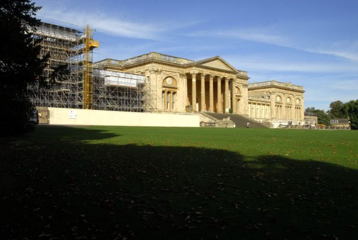 |
| Стоу. Парковый фасад дворца |
Стоу – огромное старинное овцеводческое поместье, расположенное неподалеку от городка Бакингем. Именно доходы от имения позволили семейству Темплов построить здесь сначала замок, а потом дворец. Фасады солнечного цвета простираются на триста метров – правда, боковые части скрыты деревьями, - а число комнат достигало четырехсот. Дом вписан в ландшафт еще архитекторами XVII века, причем с исключительным мастерством: сдержанный северный фасад смотрит на плоский парковый пейзаж с полями и пастбищами, а торжественный южный высится над зеленым склоном, в конце которого блестят воды озера.
| 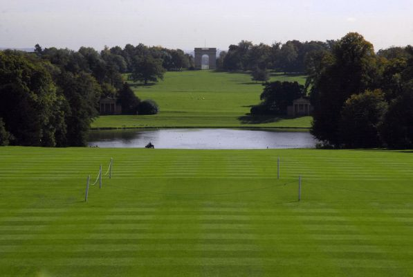 |
| Стоу. Вид от дворца на партер, Восьмигранное озеро и Триумфальную арку |
Дальше расстилается широкий ровный луг, усеянный белыми точками овец, затем местность повышается гребнем, и на нем стоят огромные воздушные ворота – Триумфальная арка. И это еще не все!
 |
| Стоу. Планировка ансамбля и его связь с городом Бакингем. Снимок со спутника. Схема Б. Соколова |
Дорога от арки, прямая как стрела, ведет через поля прямо в центр
Бакингема, зримо связывая Темплов со столицей графства. Ричард Темпл,
наш главный герой, соорудил на собственные деньги общественное здание,
дабы показать свое влияние. По воле случая зданием этим оказалась
городская тюрьма...
 |
| Стоу. Вид от дворца - Елисейские поля за стеной деревьев, в просвет видна Колонна Гренвиля |
Поскольку семейство владело живописной территорией, на которой отращивали шерсть тысячи овец, именно здесь впервые в эпоху Просвещения был создан образец "украшенной фермы". Теоретики пейзажного парка в начале XVIII столетия утверждали, что гибрид сельскохозяйственных угодий с красивой усадьбой уже осуществлен во Франции. Это была самая настоящая пропаганда. Во Франции таких усадеб не было, но англичанам очень хотелось создавать не пейзажные сады, а целые живописные пейзажи.
Стоу стал местом приложения сил всего "пейзажного движения" 1710-1740-х годов. Его владелец - Ричард Темпл, виконт Кобэм – был не только военачальником, связанным с герцогом Мальборо (для него в эти годы архитектора Ванбру строил усадьбу Бленем). Темпл был парламентарием, убежденным вигом, масоном (больше по моде, чем по убеждениям) и членом клуба Кит-Кэт.
 |
 |
|
| Томас Мюррей. Сэр Джон Ванбру | Уильям Эйкман. Портрет Уильяма Кента | Натаниэль Дэнс. Портрет Ланселота Брауна |
В круг его светских знакомств входили архитектор и драматург Джон
Ванбру, теоретик искусства Джозеф Аддисон, лорд Берлингтон и – что
важнее всего для судьбы ансамбля – члены его кружка, "садовый художник"
Кент и поэт Александер Поуп. Именно они произвели пейзажную революцию в
одной отдельно взятой английской усадьбе.
 |
| Стоу. План имения эпохи Чарлза Бриджмена: бастионы, канал, Всьмигранное озеро. 1720е |
Великие работы начались в 1711 году и продолжались около тридцати лет. Вспоминается история Версаля, сады которого Людовик XIV велел переделывать по нескольку раз, добиваясь нового величия и стиля. Прежний скромный сад был превращен в обширный парк, захватывающий территорию нынешнего озера и водного каскада. Эта работа Чарлза Бриджмена хорошо известна по серии гравюр – ровный наклонный партер, "итальянские" длинные пруды с лодками и дальними перспективами, на центральной оси - Октогон, восьмигранный пруд со столбом, извергающим воду. Интересным решением Бриджмена было оформление границ парка – стена "ах-ах" по углам дополнена полукруглыми бастионами. Полковник Кобем жил словно в большой зеленой крепости. Бриджмен работал в Стоу до 1735 года, а в 1720-х несколько проектов для парка по дружески выполнил Ванбру.
 |
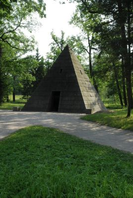 |
| Стоу. Пирамида Ванбру. Гравюра Жака Риго. 1730-е | Царское Село. Пирамида |
Очень жаль, что исчезла высокая Пирамида, поставленная им недалеко от главной оси. Время отняло у Стоу около тридцати павильонов, но этот был особенным. Во-первых, Кобэм посвятил его памяти архитектора, умершего в 1726 году. Во-вторых, пирамида Ванбру поразила воображение российской императрицы, и она пожелала построить такой же – сохранившийся! – памятник древним временам в Царском Селе.
 |
| Стоу. Вид Западного сада |
Парк Бриджмена мог казаться новым и эффектным в начале пейзажной революции, когда барочные формы и итальянские открытые перспективы с лугами и полями были огромным новшеством (вспомним Хемптон Корт с его замкнутыми садами и жесткими линиями аллей). После ухода из жизни Бриджмена Кобэм с друзьями решают, что нужно двигаться дальше. Наступает звездный час Уильяма Кента. Советуясь с кругом своих друзей-заказчиков, он вырабатывает великий "натуральный" план для все еще слишком регулярного и слишком легко обозримого парка. Стоу из единого открытого пространства превращается в череду индивидуальных сцен и обособленных художественных миров.
 |
| Стоу. Памятник Доблестным британцам. Бюст Александра Поупа |
Новому Стоу посвящен проникновенный поэтический трактат – "Послание к лорду Берлингтону" Александера Поупа. Оно был столь дорог поэту, что работа над ним продолжалась с момента публикации в 1731 году до самой смерти поэта. Эти прекрасные стихи не переводились на русский, и я сделал свой перевод. В англоязычном мире эти стихи стали хрестоматийными. На следующий день мы встретились с "Посланием" в Стоурхеде, где двустишия поэта поместили на дощечках прямо среди пейзажей! Именно в этом стихотворении Поуп бросил крылатую фразу – "Consult the Genius of the Place in all" - "Во всем советуйся с гением места":
Consult the genius of the place in all;
That tells the waters or to rise, or fall,
Or helps th"ambitious hill the heavens to scale,
Or scoops in circling theatres the vale;
Calls in the country, catches opening glades,
Joins willing woods, and varies shades from shades;
Now breaks, or now directs, th"intending lines,
Paints as you plant, and as you work, designs.
Пусть гений места даст тебе совет;
Тот, кто потока направляет след,
Иль гордый холм поднимет до небес,
Иль обратит в театр уступов дольних срез;
Мелькнет в селе, займет полян широкий вид,
Соединит леса, а краски оттенит;
То разорвет, а то направит линий строй,
Художник рощ твоих, работ твоих герой.
Кент превращает "зеленый ковер", ниспадавший к восьмигранному озеру, в подобие луга, окруженного мягкими формами могучих деревьев.
 |
| Стоу. Вид на дворец от Восьмигранного озера. Слева только что посаженная Спящая роща |
Классический фасад в обрамлении "естественных" посадок производит сильное впечатление, особенно издалека, от озера или Триумфальной арки. На месте водного восьмигранника с фонтаном теперь разливается спокойное озеро, а пруды и каналы сменяются дикими каскадами и ручьями.
 |
| Стоу. Бывшее Восьмигранное озеро и Триумфальная арка |
Именно это имел в виду Поуп:
The vast parterres a thousand hands shall make,
Lo! COBHAM comes, and floats them with a lake.
Партеров ширину готовят сотни рук,
Но КОБЭМ повелел! и озеро вокруг.
Стоу – коллективное творение, и Коринфская арка, завершающая великий
вид, создана уже после ухода из жизни Кента и Кобэма, по проекту
дилетанта - Томаса Питта, племянника владельца и известного политика.
Ощущение грандиозного масштаба возникает у зрителя потому, что от колоннады дворца до самой арки нет ни одной архитектурной или иной преграды. За зеленым склоном и озером идет незаметное отсюда ах-ах, а за ним колоссальный луг, обрамленный темными древесными кулисами и плавно поднимающийся к арке. Три километра от въезда до порога дома, и все они отданы пейзажному виду!
 |
| Стоу. Триумфальная арка на расстоянии двух километров. Видны обрамляющие ее колонны |
Летом луг усеян белыми фигурками овец. Арка не служит въездом –
поворот ведет к боковой дороге, скрытой деревьями. Прекрасный пример
непрерывной сцены, "скрытых границ", воспетых Поупом:
He gains all points, who pleasingly confounds,
Surprises, varies, and conceals the bounds.
Тот выиграл у всех, кто завлечет игрою,
Подменит, удивит, и рубежи сокроет.
Наше знакомство с парком началось с посещения дворца, точнее, его
центрального купольного зала (здание занимает частная привилегированная
школа). Этот зал не просто красив – он является центром всей усадьбы.
 |
| Стоу. На партере ученики школы Стоу играют в гольф |
| 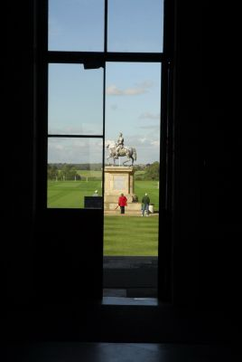 |  |
| Стоу. Вид из купольного зала дворца на север... | ...и в парк |
Двери с обеих сторон зала были распахнуты, соединяя две пейзажных сцены. В одну сторону открывается вид на озеро и Триумфальную арку, в другую – на двор, конную статую короля Георга и пейзажные поля. Мне кажется, что такие залы шириной весь дом – находка пейзажной эпохи.
| 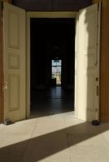 | |
| Стоу. Световой купол дворца недавно отреставрирован | Стоу. Двери в парк |
Ни в Версале, ни в Хемптон Корте, ни в Царском Селе подобного сквозного вида нет, а в Павловске виды сквозь анфиладу комнат, причем через крупные панорамные окна, предусмотрены. И воздух парка продолжается в воздухе дворца.
 |
| Стоу. Скамья в портике дворца для любования пейзажем. Фото Елены Лапенко |
Если смотреть от дома на арку, удобно представить себе те сцены, отдельные "сады", которыми славен Стоу. Эти названия не официальные, но устоявшиеся – внимательный посетитель легко убеждается в существовании и обособленности этих сцен.
 |
| Стоу. Западный сад с Ротондой Венеры |
Справа находится Западный сад, открытая местность со множеством памятников разным родам и оттенкам любви.
 |
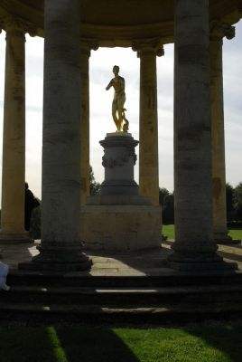 |
| Стоу. Ротонда Венеры |
В центре склона расположена эффектная ротонда со статуей Венеры, и ниже, за потоком – подковообразный Храм Венеры с античной надписью над входом "Пусть полюбит нелюбивший, кто любил, пусть любит вновь".
| 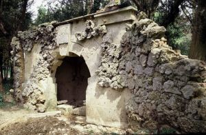 |  |
| Стоу. Пещера Дидоны. Фото Б. Соколова. 1996. Видны первоначальные гладкие стены | Стоу. Пещера Дидоны. Гравюра из книги Джорджа Бикема Красоты Стоу (1750) |
Рядом, в зарослях кустарника притаился мой любимый павильон – Пещера Дидоны. Когда-то там была видна надпись, рассказывающая о приключениях героев "Энеиды" Вергилия: "Видны в пещере, где успели скрыться, // Герой Троян с Тирийскою царицей". Стоу уже в эпоху Просвещения стал настолько популярен, что для его посетителей были выпущены первые в Англии садовые путеводители. В одном из них я нашел надписи и пояснения (здесь они даются в моем переводе), в другом – "картинки", старинные изображения павильонов и колонн. Так вот, на иллюстрации из ранней эпохи Стоу "Пещера" – просто павильон с гладкими стенами и арочным входом. Этот условный грот в середине XVIII века стал казаться во всех отношениях неестественным – и его обложили грубыми кусками пористого известняка. Именно таким я обнаружил его в свой первый приезд, в 1994 году.
| 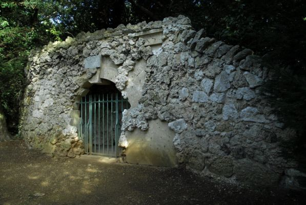 |
| Стоу. Пещера Дидоны. Фото Б. Соколова. 2010 |
А потом камни стали падать, и началась реставрация, обнажившая прежние ровные стены. Оба состояния этой скромной постройки очень интересны, поэтому фасад решили оставить в "полуразобранном" виде. Таким вот памятником двух эпох "естественности" мы его и увидели.
 |
| Стоу. Пещера Дидоны. Матерь Любви, Тебя приветствую... |
А над входом написано на латыни: "Матерь Любви, Тебя приветствую".
 |
| Стоу. Елисейские поля. Снимок со спутника. Схема Б. Соколова |
Между партером и Западным садом у меня была назначена встреча. Барри Смит, главный садовник Стоу, который сажал экзотические деревья в Сонной роще, припомнил мой первый визит. В тот приезд мне посчастливилось жить под крышей Триумфальной арки и изучать усадьбу, расспрашивая всех обо всем. Мы договорились пройтись по парку, чтобы поговорить и увидеть новые посадки. Но пока мы всей группой отправились в мир иной – на Елисейские поля.
 |
| Стоу. Елисейские поля. Плотина, памятник Доблестным британцам, река Стикс... |
Заветное место, шедевр Уильяма Кента расположен параллельно партерному склону, вдоль речки Алдер, и бережно укрыт густыми зарослями высоких деревьев. Прекрасная узкая долина полна солнечного света и одухотворена несколькими храмами, полными глубокого смысла и красоты.
| 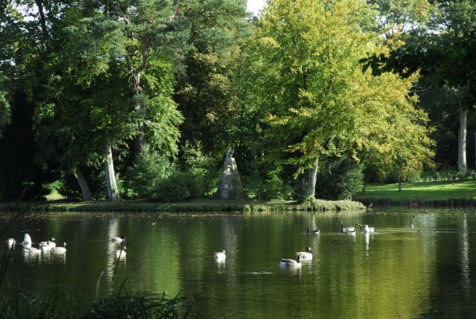 |
| Стоу. Елисейские поля. Разлив реки и памятник драматургу Уильяму Конгриву |
Это место посвящено памяти и доблестям великих людей далекого и недавнего прошлого, поэтому и настроение создает несколько меланхолическое, а речка названа Стиксом, именем водной границы греческого загробного мира.
 |
| Стоу. Елисейские поля. Грот Венеры |
Если вернуться от поэзии к ландшафту, можно увидеть, что Елисейские поля – это лощина с выровненными откосами, из которых тот, что граничит с партером, круче, а дальний, пологий раскрывает следующую садовую сцену. Течение речки замедлено двумя плотинами, верхняя из которых скрывает в себе большой грот.
 |
| Стоу. Елисейские поля. Грот Венеры на гравюре середины XVIII века |
Он остался от ранних времен, поэтому полон проемов, барочных эффектов, в нише находится статуя Венеры.
 |
| Стоу. Елисейские поля. Вид из Грота Венеры |
Прелестен замшелый вход и в особенности грубая арка, сквозь которую видна почти вся долина.
| 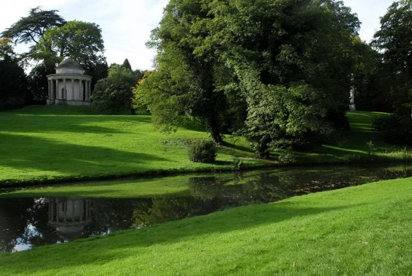 |
| Стоу. Елисейские поля. Храм Древних добродетелей и Колонна Гренвиля |
 |
| Стоу. Елисейские поля. Вид на Памятник Доблестным британцам от Храма Древних добродетелей |
Главные постройки Елисейских полей бросаются в глаза сразу. Они стоят над рекой, наискосок друг от друга – круглый купольный храмик и подковообразный мемориал со множеством бюстов. Античный храм был посвящен "Древним добродетелям", как показывает и латинская надпись над его входом.
У него есть и художественный, и политический смысл. Внутри установлены четыре статуи великих греков – Эпаминонд, Ликург, Сократ и Гомер, два правителя и два деятеля искусств.
 |
| Стоу. Храм Древних Добродетелей. Эпаминонд, Ликург, Сократ |
Надписи (которых в Стоу немало) сделаны в поучение для нынешнего века. Вот как восхваляется Сократ:
Тот, кто в развратнейшем государстве остался чистым,
Насадитель добра, служитель единого БОГА,
От бесполезной праздности и тщетных прений
К жизненному долгу и общественному благу
Философию направил,
Муж наимудрейший.
С Храмом Древней Добродетели связаны еще две постройки – одна
существует и сегодня, от другой остались только камни фундамента. Если
заглянуть в заросли деревьев за Храмом, обнаруживается сельская церковь.
| 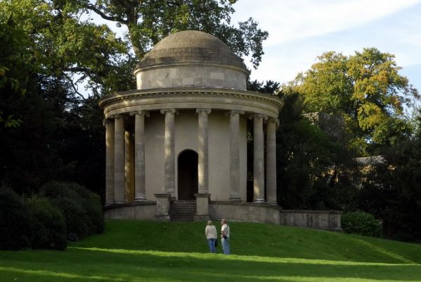 |
| Стоу. Храм Древних добродетелей, справа за деревьями - сельская церковь |
Здесь была деревня, которую Кобэм перевел в другое место. Церковь он перенести не мог, хотя не прочь был ее сломать, поэтому укрыл ее в гуще деревьев. Кстати, много позже здесь венчался начинающий садовый мастер Ланселот Браун.
| 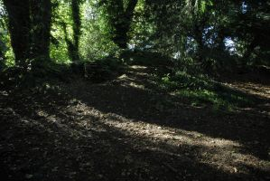 |  |
| Стоу. Елисейские поля. Развалины Храма современной добродетели едва видны под слоем земли | Стоу. Храм Современной добродетели на гравюре середины XVIII века |
Левее Храма некогда красовалась искусственная руина уродливой
архитектуры, а перед ней – статуя в современном камзоле и без головы.
"Храм Современной Добродетели" был сатирой Кобэма и его друзей на
политический курс премьер-министра Роберта Уолпола. Но потом шутка
перестала казаться смешной, и искусственная руина потихоньку
превратилась в естественную.
| 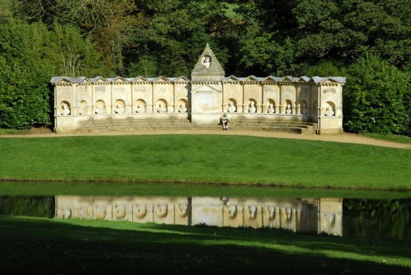 |
| Стоу. Памятник Доблестным Британцам |
Храм, созданный по проекту Кента, гармоничен и особенно украшает пейзажную картину, если любоваться им с противоположной стороны "Стикса". Лучший вид на него от странной подковы, которая называется "Доблестные Британцы". Это даже не постройка, а большой постамент для исторического и опять-таки политического пантеона, придуманного коллективными авторами усадьбы.
 |
| Стоу. Памятник Доблестным Британцам. На первом плане - Томас Грешэм, создатель Лондонской Биржи |
Кого здесь только нет! Королева Елизавета и ее сиятельные пираты
Рэйли и Дрейк, защитники Англии король Альфред и "Черный Принц" Эдуард,
философ Локк и физик Ньютон, драматург Шекспир и высоко ценимый
пейзажной эпохой поэт Милтон. А еще знакомый нам по скульптурному
изображению в Чизике архитектор Иниго Джонс и скромно, без надписи
(живой классик!), помещенный в боковой нише портрет Александера Поупа.
 |
 |
 |
| Стоу. Памятник Доблестным Британцам. Король Альфред | Стоу. Памятник Доблестным Британцам. Надпись в честь короля Альфреда | Стоу. Памятник Доблестным Британцам. Иниго Джонс |
Каждый бюст сопровождается красноречивым текстом. Особенно интересна
эпитафия Королю Альфреду: "Добрейший, справедливейший и милосерднейший
из королей; отбивший Датчан, охранивший Моря, поддержавший Познанье,
установивший Суды, сокрушивший Продажность, спасший Свободу, и ставший
Создателем Английской Конституции". Интересна еще и потому, что с этим
королем и схожей надписью мы встретились на следующий день в Стоурхеде. В
центре памятника помещены прекрасные латинские стихи, которые я перевел
так:
Hic manus ob patriam pugnando vulnera passi,
Quique pii vates, & Phoebo digna locuti,
Inventas aut qui vitam excoluere per artes,
Quique sui memeores alios fecere merendo.
Ратники здесь, что за родину раны сражений терпели,
И божества песнопевцы, достойные спутники Феба,
Новых создатели сил, что жизнь просветили искусством,
Те, кто память свою в поколеньях иных заслужили.
 |
| Стоу. Памятник Доблестным Британцам. Бюст Меркурия: К Елисейским ведет полям... |
"Доблестные Британцы" – не просто постамент, а целый роман в камне. В
этом романе, как и во всей английской культуре, есть и возвышенные, и
смешные строки. Начну, пожалуй, с возвышенной темы – венчающей пирамидки
с бюстом Меркурия. Надпись под ним гласит: "К Елисейским ведет полям";
бог приводит великих людей Британии сюда, где живет античное
совершенство и древние герои. Об этом можно догадаться и без чтения –
так выразительно смотрят друг на друга два памятника.
 |
| Стоу. Памятник Доблестным Британцам. Эпитафия Синьору Фидо |
А вот если обойти постамент с тыла, можно получить легкий шок от
столкновения великого и смешного. В нише памятника помещена загадочная
эпитафия, в которой покойный расхваливается буквально до небес:
Памяти
СИНЬОРА ФИДО,
Итальянца хорошего Рода;
который прибыл в Англию
не с тем, чтобы нас укусить, подобно многим его землякам,
но дабы вести достойную Жизнь.
Он не охотился за Славой,
но имел ее;
не считаясь с Похвалой Друзей,
Был чувствителен к их Любви.
Хотя он жил среди Великих,
однако не научился ни Лести, ни Порокам...
Только последние строчки рассеивают недоумение озадаченного посетителя. И вспоминается похожая надпись в
Раушеме:
Читатель,
сей Камень неповинен в Лести,
ибо тот, кому он посвящен,
был не Человек,
а
БОРЗАЯ.
| 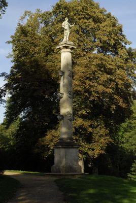 |  |
| Стоу. Елисейские поля. Колонна Гренвиля | Стоу. Елисейские поля. На вершине Колонны Гренвиля стоит Каллиопа, муза трагической поэзии |
На Елисейских полях есть удивительное место – морской памятник посреди пейзажного парка. На высоком откосе стоит хорошо видимая с воды небольшая колонна, увенчанная женской статуей. Колонна ростральная, потому что посвящена капитану Гренвилю, племяннику Кобэма, погибшему в морском сражении. Она стоит над запрудой, которую чувствительные души понимали как символ бескрайнего моря. Позже здесь установили еще один морской памятник – постамент с глобусом, посвященный погибшему в южных морях Джеймсу Куку.
| 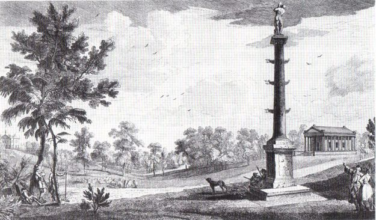 |
| Колонна Гренвиля и Храм Согласия и Победы в Греческой долине. Гравюра из книги Джорджа Бикема Красоты Стоу (1750) |
Этот замечательный уголок возник в Стоу не сразу. Виконт Кобэм поставил Колонну в Греческой долине, неподалеку от античного храма, вскоре после гибели Гренвиля в 1747 году. Его племянник, наследник и тезка, граф Ричард Кобэм, в 1756 году перенес памятник своему брату к воде "реки Стикс", и заменил статую Нептуна на изображение Каллиопы, музы трагической поэзии. Теперь она глядит на Памятник Доблестным британцам, разворачивая свиток с надписью "Лишь о великом пою".
 |
| Стоу. Елисейские поля. Памятник Куку. 2010 |
В 1778 году неподалеку появился памятник знаменитому географу и путешественнику Джеймсу Куку. Опытнейший моряк, под командованием которого служили и знакомый нам по Музею садоводства капита Блай, он в то время совершал третье кругосветное путешествие, вскоре закончившиееся трагически. Потом Памятник Куку перенесли ближе к Колонне, и ассоциации с морским мемориалом упрочились. В первый свой приезд в Стоу я видел стелу с барельефоми надписью. Сейчас восстановлен первоначальный вид памятника, увенчаннного большим глобусом.
 |
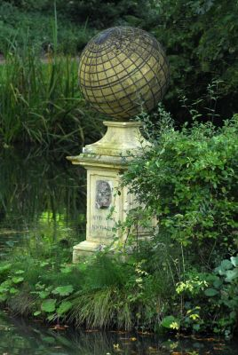 |
| Стоу. Елисейские поля. Памятник Куку. 1996 | Стоу. Елисейские поля. Памятник Куку. 2010 |
Образ моря, созданный в Стоу, через несколько лет был повторен во французском парке Меревиль – там Ростральная колонна и Памятник Куку отражались в водах обширного озера. Ростральная колонна была посвящена памяти сыновей владельца, также погибших во время морской экспедиции.
 |
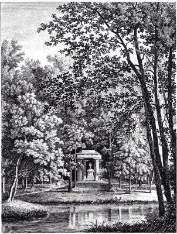 |
| Ростральная колонна в Меревиле. Гравюра из книги Александра Лаборда Описание новых садов Франции (1808) | Памятник Куку в Меревиле. Гравюра из книги Александра Лаборда Описание новых садов Франции (1808) |
Гравюра с этой колонной, стоящей над широкой водной гладью, была помещена в книге Александра Лаборда "Описание новых садов Франции и старинных ее замков" (1808). Я пытался найти эти памятники, но сначала потерпел неудачу: оказывается, парк Меревиля давно впал в запустение, а украшения его проданы. Но однажды в июльском Париже я развернул лист с рекламой садовых поездок и обнаружил ...ростральную колонну и памятник Куку в парке некого Замка Жёрр. Поехал - и, о радость! Именно туда они поступили из Меревиля в начале ХХ века. И вот на этой странице мы можем сравнить памятники "французского Стоу" с их оригиналами.
 |
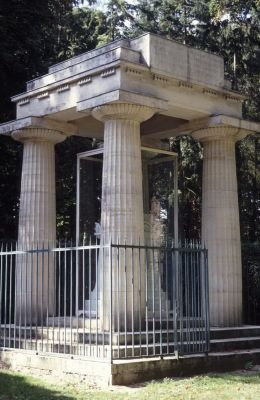 |
| Ростральная колона из Меревиля. Шато де Жёр. Фото Б. Соколова. 1998 | Памятник Куку из Меревиля. Шато де Жёр. Фото Б. Соколова. 1998 |
Еще одна "дочка" Колонны Гренвиля украшает Царское Село. Читая книги и рассматривая гравюры о парке Стоу дали пищу воображению Екатерины II. Вот две страницы из иллюстрированных книг о Стоу, с которыми могла быть знакома императрица:
 |
 |
| Колонна Гренвиля. Гравюра из книги Бентона Сили Виды храмов... в Стоу (1750) | Колонна Гренвиля и Греческий храм. Лист из книги Джорджа Бикема Красоты Стоу (1750) |
Так посреди Большого озера возникла мощная Чесменская колонна, повествующая не о гибели близких, а о державной победе над вражеским флотом.
 |
| Царское Село. Чесменская колонна. Фото Б. Соколова. 2010 |
Колонна Гренвиля играет в парке еще одну важную роль. От нее ведет пейзажный просвет, наискосок соединяющий фасад дворца и закрытую деревьями долину Елисейских полей. Эта связующая виста очень выразительна, и мы сразу обратили на нее внимание.
| 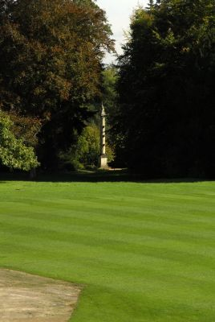 | 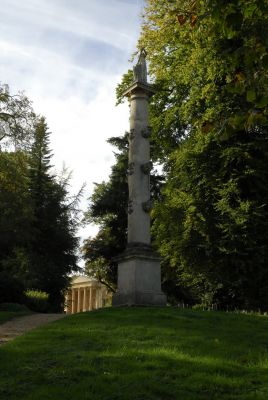 |
| Стоу. Вид от доврца на Колонну Гренвиля | Стоу. Елисейские поля. Вид на Колонну Гренвиля и портик дворца |
Прежде чем покинуть Елисейские поля, я еще раз вспомнил умные, поэтичные, злободневные надписи на его монументах. Предлагаю и вам прочесть маленькие поэмы, которыми здесь почтили обладателей "древних добродетелей":
Эпаминонд
 |
| Стоу. Храм Древних добродетелей. Эпаминонд |
Тот, через чью доблесть, скромность и умеренность
Фиванская республика
Вместе и вольность и началие,
Также уставы, военный, гражданский, домашний,
Получила;
С чьим уходом потеряла.
Ликург
 |
| Стоу. Храм Древних добродетелей. Ликург |
Тот, кто с величайшей мудростью создав законы,
Наилучшим образом защитил их от порчи,
Отец отечества,
Незыблемую свободу
И благословенные нравы,
Изгнав корысть, роскошь и сластолюбие,
На многие века
Согражданам даровал.
Сократ
 |
| Стоу. Храм Древних добродетелей. Сократ |
Тот, кто в развратнейшем государстве остался чистым,
Насадитель добра, служитель единого БОГА,
От бесполезной праздности и тщетных прений
К жизненному долгу и общественному благу
Философию направил,
Муж наимудрейший.
Гомер
 |
| Стоу. Храм Древних добродетелей. Гомер |
Тот, кто был первым поэтом, также и величайшим,
Глашатай доблести, даритель бессмертья,
В божественной песни
К прекрасной отваге, к терпению в страданьях,
Всеми прочтенный, всех побудил.
Бентон Сили. Описание садов виконта Кобэма в Стоу (1744) Перевод Б. Соколова
| 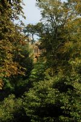 |
| Стоу. Путешествие продолжается: вид с Елисейских полей на Готический храм |
При использовании материалов активная ссылка на www.gardenhistory.ru обязательна.